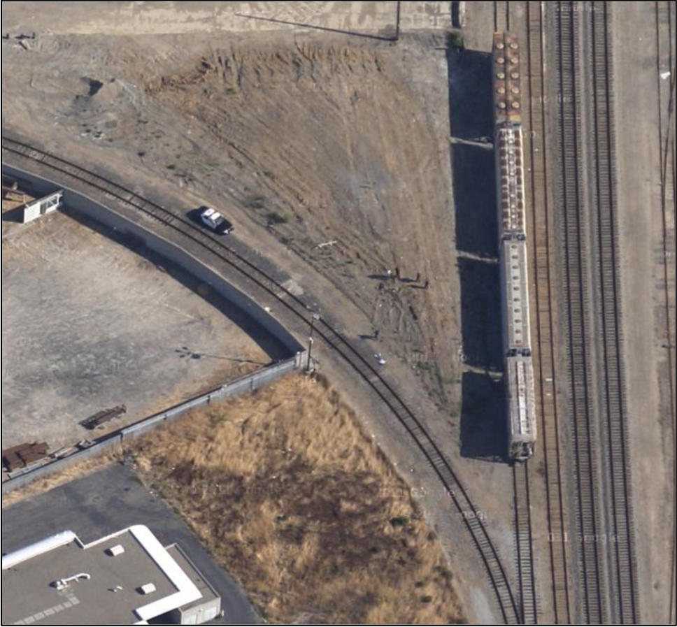

Press 'o' to toggle the slide overview and 'f' for full-screen mode.
Choose the theme in which to view this presentation:
Black -
White -
League -
Sky -
Beige -
Simple
Serif -
Blood -
Night -
Moon -
Solarized
GEOG*3480
GIS and Spatial Analysis
Course Introduction
John Lindsay
Fall 2015
Introductions
Who Am I?
- Dr. John Lindsay
- Email: jlindsay@uoguelph.ca
- Office: 346 Hutt Building
- Office Hours: Monday 11:30 - 1:00 and Wednesdays 11:30 - 1:00
Graduate Teaching Assistants
- Responsible for running the labs
- Melanie Chabot (mcowan01@uoguelph.ca)
- Elene Ueckermann
- You can attend any GTAs office hours if you have a question.
- They will post their office hours to the CourseLink page.
Please insert
here
Course Overview
Where does this course fit in?
- 2nd Year: GEOG2420 (RS & photogrammetry) & GEOG2480 (GIS & cartography)
- 3rd Year: GEOG3420 (RS analysis) & GEOG3480 (GIS analysis)
- 4th Year: GEOG4480 Advanced Geomatics
By the end, you should be able to:
- Understand the foundational theories of GIS including the unique character of spatial data.
- Analyze geospatial data using GIS software
- Understand spatial analysis techniques and practices
- Practice communicating concepts through formal written and visual forms
- Identified key issues related to spatial data error
Course Overview
- Two hours of lectures each week (Mondays and Wednesdays)
- 3 hours of laboratory sessions
- Labs start in Week 2, i.e. next week
- Labs will be held in the computer lab in the Hutt building Rm. 231
Readings
- Readings will be mainly drawn from Jensen and Jensen (2015).
- $177 at bookstore ($134 on Amazon)
- Asked for a copy to be placed on reserve but library hasn't purchased it yet.
Other Materials
- There are also two lab manuals
- A $30 fee covers the cost of these extra materials (paid in lab)
- $10 of the fee goes to printing credits
Even More Course Materials
- Link from ‘Courselink’ on UoG homepage
- The course syllabus is now posted.
- Used to provide online course materials, discussion, and a place for grades
Method of Evaluation
- Lab assignments 50% (5 x 10%)
- Late penalty is 10% per day
- Mid-term 25% (Wednesday Oct. 26, in class)
- Final Exam 25%
- Scheduled for Thurs. Dec. 10, 7:00-9:00PM, Room TBA
- The final exam is not cumulative
A Note On Notes...
A Note On The Schedule...
The last day of classes is on Thursday December 3 to make up for the lost Monday due to Thanksgiving.

Let's begin...
What is GIS and spatial analysis?
Readings
- Jensen & Jensen Misconceptions about GIS (pp. 10-12), Components of GIS (pp. 12-17), and The Business of GIS (pp. 17-18).
Lecture outline:
- Where does GIS fit in?
- History of GIS
- What is GIS?
- Components of GIS
- GIS key concepts
- Spatial analysis
Where does GIS fit in?
Pidwirny’s Geography
But where does GIS fit into geography?
Lindsay's Geography

GIS Outside of Geography
GIS doesn't belongs to geographers alone! It’s used as a tool in many fields including:
- Engineering and urban planning
- Epidemiology and medical sociology
- Business and real estate
- Archaeology
- Military
- Forestry
- Criminology
- Environment and natural resources management...the list is endless
Where does GIS fit into society?
- It has significant economic impact as the GIS software development, data acquisition, and services industries combined are a multi-billion dollar market.
- An enormous swath of human activity is now touched by geographical technology and is increasingly reliant on it.
- GIS has had strongly impacted the education sector and academic research.
The History of GIS
Where did GIS come from?
- Geography
- Cartography
- CAD and computer graphics
- Surveying and photogrammetry
- Remote sensing and space technology
Where did GIS come from?
- Canadian Geographic Information System (CGIS)
- Developed in the 1960s by Roger Tomlinson in Ottawa
- Tomlinson coined the term GIS
- Harvard Lab for Computer Graphics and Spatial Analysis
- Developed numerous software packages, SYMAP (1964), GRID (late 1960s), POLYVRT (early 1970s), etc.
- Environmental Systems Research Institute (ESRI)
- Created in 1969 by Jack and Laura Dangermond
Where did GIS come from?
- Contemporary development is driven by commercial sector
- De-classification of military applications and data leading to proliferation of GIS
- University-based development; historically important for OS GIS
- Government agencies and NGOs taking the lead on data standardization and data sharing
What is GIS?
(depends who you ask)
A GIS...
- Is a subset of information science that deals with spatially or geographically referenced data;
- Is a decision support system (DSS);
- Is different from mapping & computer aid-cartography because of its analytical capacity;
- Is different from CAD programs because it performs spatial operations;
- Is different from DBMS because it has a cartographic interface.
Okay, so what exactly is a GIS then?
What is GIS?
"GIS is any manual or computer based set of procedures used to store and manipulate geographically referenced data."
(Aronoff, 1989)
"GIS is a powerful set of tools for collecting, storing, retrieving at will, transforming and displaying spatial data from the real world for a particular set of purposes."
(Burrough and McDonnell, 1998)
What is GIS?
"GIS is a computerized tool for solving geographic problems."
(Longley et al., 2005)
"GIS is an organized collection of computer hardware, software, geographic data, and personnel designed to efficiently capture, store, update, manipulate, analyze, and display all forms of geographically referenced information." (Berry, 1993)
What is GIS?
"GIS is a system of hardware, software and procedures designed to support the capture, management, manipulation, analysis, modelling and display of spatially-referenced data for solving complex planning and management problems." (Cowen, 1990)
What is GIS?
- These definitions point to three important factors:
- GIS is a computer system
- Uses geographic (i.e. spatially referenced) data
- Carry out management and analysis operations
- Although not described in all definitions, a GIS must also have some means of data output, e.g. map display
Components of GIS
Components of GIS
- GIS is a computer based system, and thus requires appropriate hardware and software to operate
- GIS utilizes digital spatially-referenced (geo-referenced) data
- GIS requires personnel ("humanware"???) familiar with the application for which the tool is being used
Component 1: Hardware
Development of GIS required a number of technological advances:
- Computer hardware developed the capacity to provide cartographic output
- Computer systems became more robust in terms of speed, memory, and data storage capacity
- Computers became smaller & cheaper
- GIS on server, desktop, and mobile platforms
Component 2: Software
GIS software plays a role in:
- Data management
- Performing queries
- Manipulation and analysis of data
- Visualization and other outputs
Component 2: Software
| Commercial | Open Source |
|---|---|
| ArcGIS (ESRI) | GRASS |
| MapInfo | SAGA |
| Geomedia | QGIS |
| IDRISI | gvSIG |
| MicroStation | Whitebox GAT |


Component 3: Data
- Spatial data are unique (we'll talk more about data later).
- A trend towards increasing availability of massive spatial datasets.
- We live in a very data-rich time!
- The Internet has played a major role in data distribution.
- Ethical issues of data ownership and privacy.
Component 3: Data
Google often runs into issues of spatial data privacy
Component 4: Personnel (Users)

GIS key concepts
Some key ideas about GIS
- GIS can manage and integrate very large datasets gleaned from diverse sources (e.g., census data, satellite data, topographic data)
- GIS can be used to create new information and reveal trends or relationships that may otherwise be invisible
- GIS is used to help solve geographic problems
- GIS analysis, like any methodology, contains error
- There's usually more than one way to do something in GIS
Science vs. Technology
- Is GIS simply a fancy toolbox for spatial analysis?
- The technological toolbox side of GIS is widely applied and appears to have improved the lives of far more people than the theoretical developments
- Technology in general has the potential to contribute greatly to society and culture
- Science is often held in higher regard than technology by government officials and agencies, many scientists themselves, and the general public
GI Science
- Re-badging as Geographical Information Science (GISci) as in the International Journal of Geographical Information Science in 1997
- GISc involves the study of the fundamental issues arising from the creation, handling, storage and use of geographic information
- Concerned with issues like:
- Theories of spatial data and data structures
- Algorithms and processes
- Data ownership and custody
- Ethical concerns
GIS Education
- Is it just technical training?
- Development of spatial problem solving skills with emphasis on teaching people to think analytically
- Levels of education/training:
- Exposure to GIS as an information technology and its role in society (theory-rich)
- Use of GIS as an instructional tool to support existing learning and research objectives (supplement for learning)
- GIS as a major focus of study or an integral part of an analysis-oriented project (application-based ).
Spatial Analysis
Spatial Analysis
- Don't forget, this course is called GIS and Spatial Analysis
- So, what does Spatial Analysis mean?
- Also known as 'Geospatial Analysis' and 'Geographic Information Analysis'
- In its most general sense, it refers to the analysis of spatially referenced data
Spatial Analysis
- Some would consider it to be analogous to spatial statistics but we won't take this view.
- Spatial analysis is a collection of tools (e.g. algorithms, approaches, methods) for solving spatial problems
- Largely carried out in GIS these days because of its ease of visualizing output and the large datasets involved
- But the discipline of spatial analysis is much older than GIS
Spatial Analysis Examples
- Geographic measurements (e.g. number, length, area, volume)
- Queries
- Reclassification
- Distance operations/buffering
- Spatial filtering
- Spatial interpolation
- Surface/field operations (e.g. Watershed analysis)
- Network/location analysis